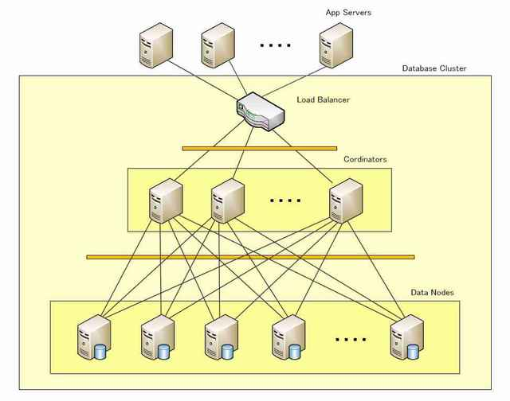

Welcome to Postgres-XC, the only known PostgreSQL cluster solution which provides for both read and write scalability.
This website includes useful information to understand, download, build, deploy and use Postgres-XC.
If you are familiar with the project outline, please visit individual pages as desired. If not, we advise you to first visit each page of this site to obtain a proper understanding of Postgres-XC and how it can help you.
All of the Postgres-XC team members are looking forward to continuing to improve Postgres-XC and working with you to help solve your database scalability problems.
Enjoy.
Postgres-XC is an open source project to provide a write-scalable, synchronous multi-master, transparent PostgreSQL cluster solution. It is a collection if tightly coupled database components which can be installed in more than one hardware or virtual machines.
Write-scalable means Postgres-XC can be configured with as many database servers as you want and handle many more writes (updating SQL statements) compared to what a single database server can not do.
Multi-master means you can have more than one database server that clients connect to which provide a single, consistent cluster-wide view of the database.
Synchronous means any database update from any database server is immediately visible to any other transactions running on different masters.
Transparent means you (and your applications) do not have to worry about how your data is stored in more than one database servers internally.
You can configure Postgres-XC to run on multiple servers. Your data is stored in a distributed way, that is, partitioned or replicated, as chosen by you for each table. When you issue queries, Postgres-XC determines where the target data is stored and issues corresponding queries to servers containing the target data.
